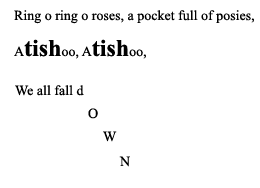

Short musical idea – a set of pitched and/or unpitched sounds that are organised in some way.
Symbolic representation can include lines, shapes, pictures and/or icons of varying size used to indicate pitch, duration, volume, rhythm, tempo and tone colour.
Find a range of lines, symbols, and patterns used in everyday life, such as road markings, directional arrows, advertising icons (ice-cream cone), computer icons.
Discuss what sounds, and/or movements might match the visual image, and ask the students to demonstrate using their own voices and bodies.
Example: The ice-cream cone may be demonstrated by a vocal crescendo, which represents the widening cone.
Ask the students to find a sound in the environment, or a musical instrument, to represent the visual image.
Example: The dotted centre line on the road can be used to represent even patterns of sound and silence
Listen to a familiar story or nursery rhyme, and retell it adding specific sounds to punctuate, and exaggerated changes in volume and tempo to express the ideas in the story.
Ask the students to offer ideas for vocal, body, found, and instrumental sounds to represent specific events in the story
Example: Pinocchio's nose growing can be represented by a gradual rise in pitch with vocalisation or on a wind instrument
Example: A sneeze can be represented by a cymbal crash
Explore the possibilities of representing the punctuation or exaggerated changes in volume and tempo, symbolically. For example:

Listen to sound tracks from contrasting movies and discuss how the elements of the music help to tell the story, especially the mood/feelings the writer wants to express.
Theme from the Titanic (a ballad and a love song)
Saturday Night Fever (a disco dance number)
Mary Poppins (Light, imaginative fun)
Phantom of the Opera (Serious and a little alarming)
Explore the relationship between sound and symbol by matching their own sounds to an invented symbol.
Ask students to make a simple series of sounds and represent them visually on the whiteboard
Example: Long lines for long vocal notes and dashes for short sounds
As a group, come up with a "theme" for a composition and discuss what musical symbols can represent the ideas in the composition
Ask the students to tell you their favourite sport, TV programme, computer game, book
When the theme is agreed, ask a student to tell you about it, stopping them regularly to ask the group what kind of sound could represent each idea, and writing it on the white board
Example: Dragonballz = loud and fast music, the fighting scenes will have two instruments duelling (taking turns to play in rapid succession), 7 balls can be represented by a sequence of 7 notes.
Talk about the need for the music to have a beginning and an end, and that it is easier to follow if the sounds are organised into boxes (bars).
Ask the students to choose vocal sounds, body percussion, or instruments to represent the ideas in the composition
Ask the students to help you organise the music into the boxes (bars) – could be based on time events eg 10 second boxes (they will need a timekeeper pointing along the time continuum as they play)
Rehearse and perform. Share ideas about each others' performances of original ideas.
Use the questions you will ask students as part of their learning experiences, to monitor and evaluate progress. For example, ask the students and yourself:
Does the sound made represent the visual image?
Can the student find a sound in the environment to represent a visual image?
How well can the student discriminate between contrasting pieces of music?
How does the student interpret a mood or feeling that is expressed/intended in a piece of music?
Can the student offer an effective idea for a musical composition?
Can the student work cooperatively within a group, contributing ideas to a group composition?
How does the student organise their sounds? Does the representation correlate?
Can the student perform a simple group percussion/vocal ensemble composition reading from symbolic notation?
Possible Strategies for Assessment:
Teacher observation of work in process
Teacher feedback to student's creative work
Self and peer assessment, using agreed criteria, of the effectiveness of the composition and of the correlation with the written representations